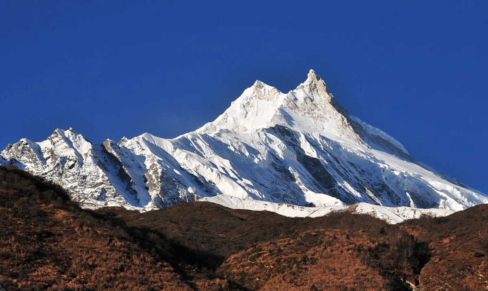
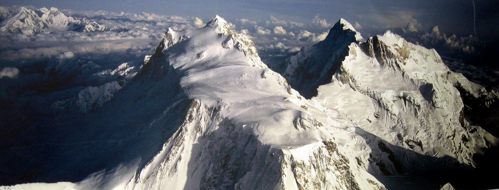
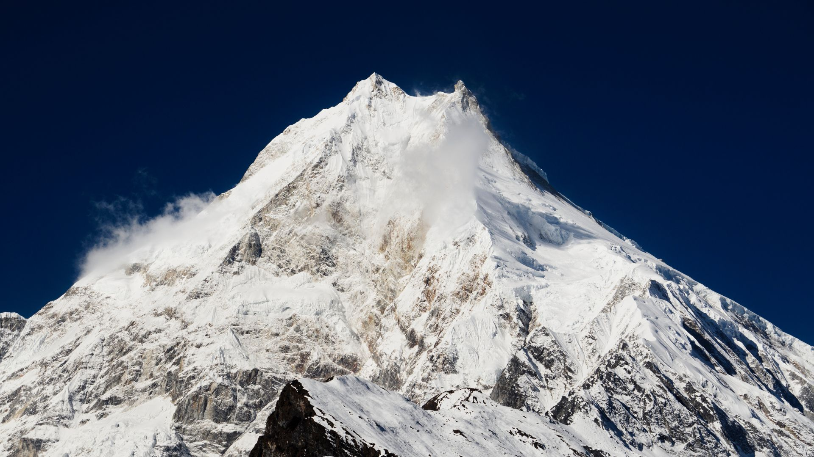
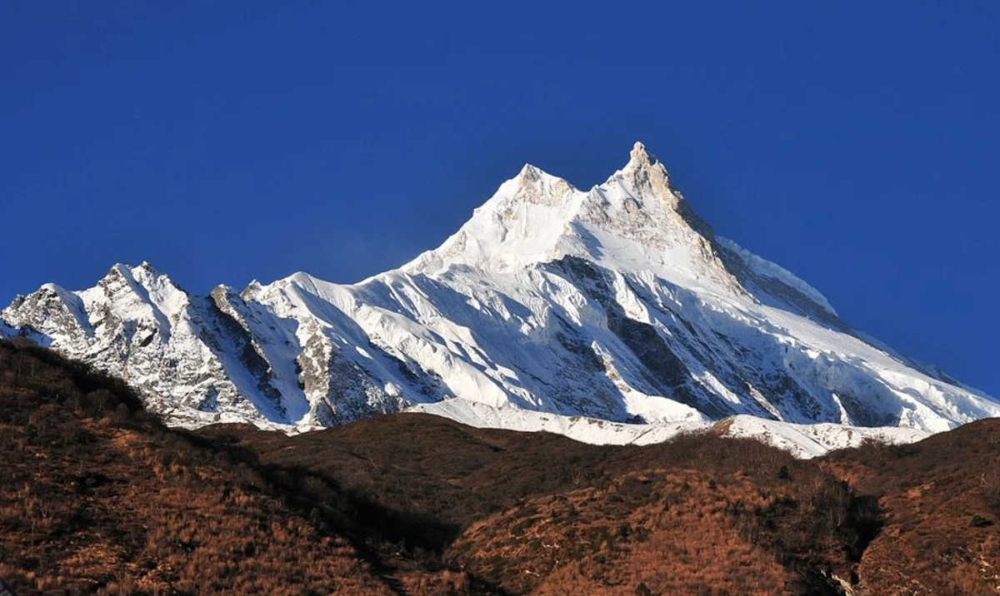
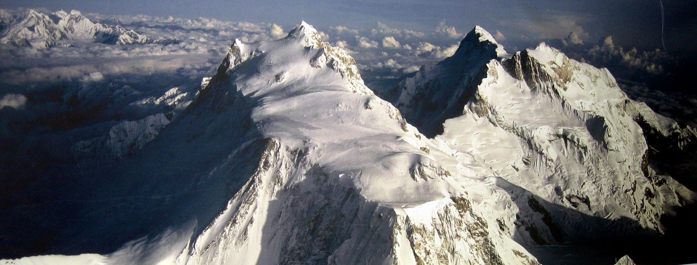
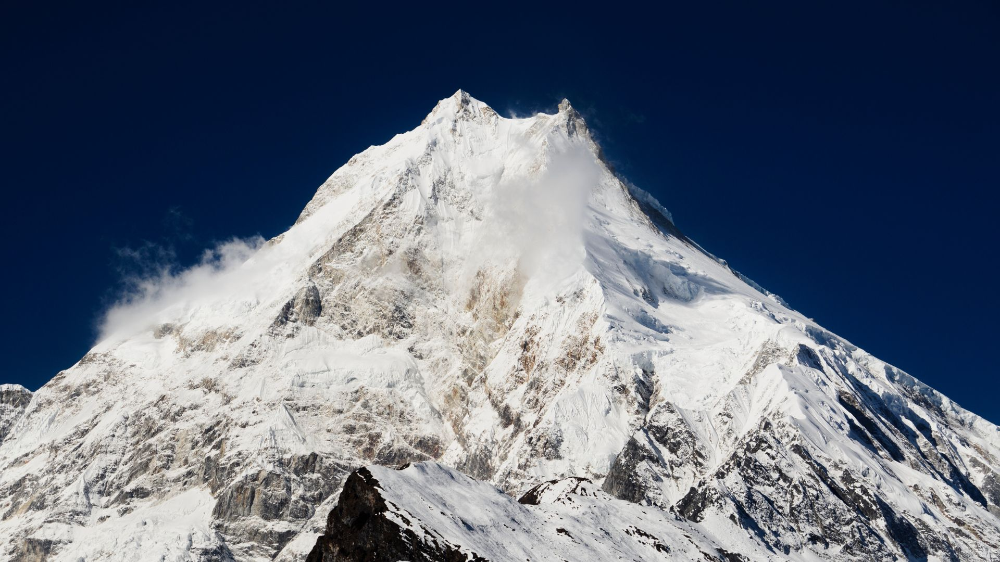

About Manaslu
Manaslu is the eighth highest mountain in the world, reaching a height of 26,781 feet (8,163 meters). Located in the Himalayan mountain range in Nepal, Manaslu is a popular destination for mountain climbers and adventurers seeking to tackle some of the world's highest peaks. The mountain has a rich history of exploration, with the first successful ascent taking place in 1956.
Manaslu is a challenging and dangerous mountain to climb, with a high fatality rate and demanding routes. Its location in the Himalayas subjects it to extreme weather and high altitude can be physically challenging for climbers. Despite these obstacles, skilled mountaineers are drawn to its difficulty and prestige.